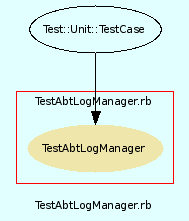

|  |
testabtlogmanager.rb
Unit testing for AbtLogManager class.
Created by Eric D. Schabell <erics@abtlinux.org> Copyright 2006, GPL.
This file is part of AbTLinux.
AbTLinux is free software; you can redistribute it and/or modify it under the terms of the GNU General Public License as published by the Free Software Foundation; either version 2 of the License, or (at your option) any later version.
AbTLinux is distributed in the hope that it will be useful, but WITHOUT ANY WARRANTY; without even the implied warranty of MERCHANTABILITY or FITNESS FOR A PARTICULAR PURPOSE. See the GNU General Public License for more details.
You should have received a copy of the GNU General Public License along with AbTLinux; if not, write to the Free Software Foundation, Inc., 51 Franklin St, Fifth Floor, Boston, MA 02110-1301 USA
- setup
- teardown
- test_cache_package
- test_log_package_build
- test_log_package_install
- test_log_package_integrity
setup method for testing AbtLogManager.
[ show source ]
# File tests/testabtlogmanager.rb, line 38
38: def setup
39: @logger = AbtLogManager.new
40: @manager = AbtPackageManager.new
41: @system = AbtSystemManager.new
42:
43: # ensures download not needed.
44: FileUtils.cp "#{$PACKAGE_PATH}/ipc-1.4.tar.gz", "#{$SOURCES_REPOSITORY}", :verbose => true if !File.exist?( "#{$SOURCES_REPOSITORY}/ipc-1.4.tar.gz" )
45: end
teardown method to cleanup after testing.
[ show source ]
# File tests/testabtlogmanager.rb, line 50
50: def teardown
51: FileUtils.rm( "#{$ABT_TMP}/ipc-1.4.watch" ) if File.exist?( "#{$ABT_TMP}/ipc-1.2.watch" )
52: end
Test method for ‘AbtLogManager.test_cache_package()’
[ show source ]
# File tests/testabtlogmanager.rb, line 102
102: def test_cache_package()
103: if !@system.package_installed( "ipc" )
104: @manager.install_package( "ipc" )
105: end
106:
107: assert( @logger.cache_package( "ipc" ), "test_cache_package()" )
108: end
Test method for ‘AbtLogManager.test_log_package_build()’
[ show source ]
# File tests/testabtlogmanager.rb, line 91
91: def test_log_package_build()
92: if !@system.package_installed( "ipc" )
93: @manager.install_package( "ipc" )
94: end
95:
96: assert( @logger.log_package_build( "ipc" ), "test_log_package_build()" )
97: end
Test method for ‘AbtLogManager.test_log_package_install()’
[ show source ]
# File tests/testabtlogmanager.rb, line 68
68: def test_log_package_install()
69: if !@system.package_installed( "ipc" )
70: @manager.install_package( "ipc" )
71: end
72:
73: # fill installwatch file.
74: File.open( "#{$ABT_TMP}/ipc-1.4.watch", "w" ) do |file|
75: file.puts "5 open /usr/local/bin/ipc #success"
76: file.puts "0 chmod /usr/local/bin/ipc 00600 #success"
77: file.puts "0 chown /usr/local/bin/ipc -1 -1 #success"
78: file.puts "0 chmod /usr/local/bin/ipc 00755 #success"
79: file.puts "5 open /usr/local/share/ipc/elemente #success"
80: file.puts "0 chmod /usr/local/share/ipc/elemente 00600 #success"
81: file.puts "0 chown /usr/local/share/ipc/elemente -1 -1 #success"
82: file.puts "0 chmod /usr/local/share/ipc/elemente 00644 #success"
83: end
84:
85: assert( @logger.log_package_install( "ipc" ), "test_log_package_install()" )
86: end
Test method for ‘AbtLogManager.test_log_package_integrity()’
[ show source ]
# File tests/testabtlogmanager.rb, line 57
57: def test_log_package_integrity()
58: if !@system.package_installed( "ipc" )
59: @manager.install_package( "ipc" )
60: end
61:
62: assert( @logger.log_package_integrity( "ipc" ), "test_log_package_integrity()" )
63: end